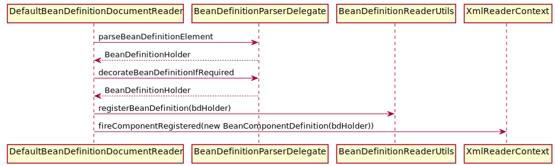
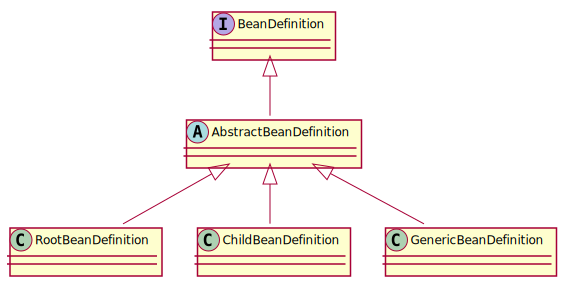
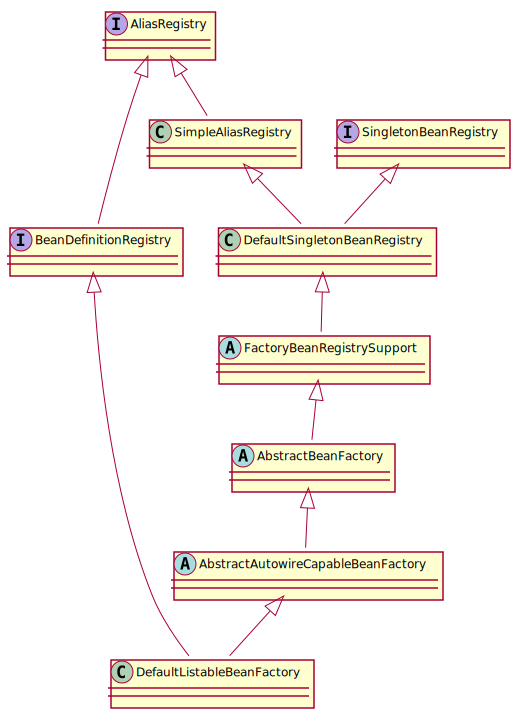
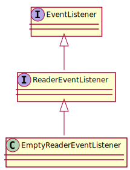

Spring (二) - 默认标签的解析 1. 默认标签的解析 parseDefaultElement 对 4 种不同的标签 import、alias、bean、beans 做了不同的处理:
1 2 3 4 5 6 7 8 9 10 11 12 13 14 15 16 private void parseDefaultElement (Element ele, BeanDefinitionParserDelegate delegate) if (delegate.nodeNameEquals(ele, IMPORT_ELEMENT)) { importBeanDefinitionResource(ele); } else if (delegate.nodeNameEquals(ele, ALIAS_ELEMENT)) { processAliasRegistration(ele); } else if (delegate.nodeNameEquals(ele, BEAN_ELEMENT)) { processBeanDefinition(ele, delegate); } else if (delegate.nodeNameEquals(ele, NESTED_BEANS_ELEMENT)) { doRegisterBeanDefinitions(ele); } }
2. 解析 bean 标签并注册 processBeanDefinition 方法调用的时序图:

2.1 解析 bean: 解析 id 和 name:
1 2 3 4 5 6 public BeanDefinitionHolder parseBeanDefinitionElement (Element ele, BeanDefinition containingBean) String id = ele.getAttribute(ID_ATTRIBUTE); String nameAttr = ele.getAttribute(NAME_ATTRIBUTE); }
进一步解析其他属性并统一封装至 GenericBeanDefinition 中:
1 2 3 4 5 6 7 8 9 10 11 12 13 14 15 16 17 18 19 20 protected AbstractBeanDefinition createBeanDefinition (String className, String parentName) throws ClassNotFoundException { return BeanDefinitionReaderUtils .createBeanDefinition(parentName, className, this .readerContext.getBeanClassLoader()); } public static AbstractBeanDefinition createBeanDefinition(String parentName, String className, ClassLoader classLoader) throws ClassNotFoundException { GenericBeanDefinition bd = new GenericBeanDefinition(); return bd; }
BeanDefinition 是 <bean> 在容器中的内部表示形式，BeanDefinition 和 <bean> 是一一对应的。BeanDefinition 会被注册到 BeanDefinitionRegistry 中，BeanDefinitionRegistry 就像 Spring 配置信息的内存数据库。

如果 bean 没有指定名字，那么使用默认规则生成 beanName:
1 2 3 beanName = BeanDefinitionReaderUtils .generateBeanName(beanDefinition, this .readerContext.getRegistry(), true );
将获取到的信息封装到 BeanDefinitionHolder 实例中:
1 2 3 4 5 public BeanDefinitionHolder parseBeanDefinitionElement (Element ele, BeanDefinition containingBean) return new BeanDefinitionHolder(beanDefinition, beanName, aliasesArray); }
2.2 注册解析的 BeanDefinition: 1 2 3 4 5 6 7 8 9 10 11 12 13 14 15 16 17 public static void registerBeanDefinition (BeanDefinitionHolder definitionHolder, BeanDefinitionRegistry registry) throws BeanDefinitionStoreException { String beanName = definitionHolder.getBeanName(); registry.registerBeanDefinition(beanName, definitionHolder.getBeanDefinition()); String[] aliases = definitionHolder.getAliases(); if (aliases != null ) { for (String alias : aliases) { registry.registerAlias(beanName, alias); } } }

BeanDefinitionRegistry 是用户代码自己提供的:
1 2 BeanDefinitionRegistry beanFactory = new DefaultListableBeanFactory(); XmlBeanDefinitionReader reader = new XmlBeanDefinitionReader(beanFactory);
因此我们分析 DefaultListableBeanFactory 中的 registerBeanDefinition 方法即可:
1 2 3 4 5 6 7 8 9 10 11 12 13 14 15 16 17 18 19 20 21 22 23 24 private final Map<String, BeanDefinition> beanDefinitionMap = new ConcurrentHashMap<>(256 );@Override public void registerBeanDefinition (String beanName, BeanDefinition beanDefinition) throws BeanDefinitionStoreException { if (beanDefinition instanceof AbstractBeanDefinition) { ((AbstractBeanDefinition) beanDefinition).validate(); } oldBeanDefinition = this .beanDefinitionMap.get(beanName); if (oldBeanDefinition != null ) { this .beanDefinitionMap.put(beanName, beanDefinition); } else { if (hasBeanCreationStarted()) { synchronized (this .beanDefinitionMap) { this .beanDefinitionMap.put(beanName, beanDefinition); } } } }
而沿着类的继承链会发现 registerAlias 的方法是在 SimpleAliasRegistry 中实现的:
1 2 3 4 5 6 7 8 9 10 11 12 13 14 15 16 17 18 private final Map<String, String> aliasMap = new ConcurrentHashMap<>(16 );@Override public void registerAlias (String name, String alias) if (alias.equals(name)) { this .aliasMap.remove(alias); } else { String registeredName = this .aliasMap.get(alias); if (registeredName != null ) { if (registeredName.equals(name)) { return ; } } checkForAliasCircle(name, alias); this .aliasMap.put(alias, name); } }
checkForAliasCircle 用于检查 alias 循环依赖A -> B 存在时，若再次出现 A -> C -> B 则会抛出异常:
1 2 3 4 5 6 7 8 9 10 11 12 13 14 15 16 protected void checkForAliasCircle (String name, String alias) if (hasAlias(alias, name)) { throw new IllegalStateException(); } } public boolean hasAlias (String name, String alias) for (Map.Entry<String, String> entry : this .aliasMap.entrySet()) { String registeredName = entry.getValue(); if (registeredName.equals(name)) { String registeredAlias = entry.getKey(); return (registeredAlias.equals(alias) || hasAlias(registeredAlias, alias)); } } return false ; }
2.3 通知监听器解析及注册完成 1 2 getReaderContext().fireComponentRegistered(new BeanComponentDefinition(bdHolder));
其中 ReaderContext 是在类 XmlBeanDefinitionReader 中调用 createReaderContext 生成的:
1 2 3 4 5 6 7 8 9 10 11 private ReaderEventListener eventListener = new EmptyReaderEventListener();public XmlReaderContext createReaderContext (Resource resource) return new XmlReaderContext(resource, this .problemReporter, this .eventListener, this .sourceExtractor, this , getNamespaceHandlerResolver()); }
ReaderContext 调用的是 EventListener 的 componentRegistered 方法:
1 2 3 4 5 6 7 8 9 10 11 12 13 14 15 16 17 public class ReaderContext public ReaderContext (Resource resource, ProblemReporter problemReporter, ReaderEventListener eventListener, SourceExtractor sourceExtractor) this .resource = resource; this .problemReporter = problemReporter; this .eventListener = eventListener; this .sourceExtractor = sourceExtractor; } public void fireComponentRegistered (ComponentDefinition componentDefinition) this .eventListener.componentRegistered(componentDefinition); } }

由此可见，这里的事件通知只为扩展，目前 Spring 没有对此事件做任何逻辑处理。
3. 解析 Alias 标签: 1 2 3 4 5 6 7 protected void processAliasRegistration (Element ele) String name = ele.getAttribute(NAME_ATTRIBUTE); String alias = ele.getAttribute(ALIAS_ATTRIBUTE); getReaderContext().getRegistry().registerAlias(name, alias); getReaderContext().fireAliasRegistered(name, alias, extractSource(ele)); }
4. 解析 import 标签: 获取位于 <resource> 属性中所表示的路径，然后判断是相对路径还是绝对路径，最后重新进行这个路径上 bean 资源文件的读取与加载:
1 2 3 4 5 6 7 8 9 10 11 12 13 14 15 16 17 18 19 20 21 22 23 24 protected void importBeanDefinitionResource (Element ele) String location = ele.getAttribute(RESOURCE_ATTRIBUTE); location = getReaderContext().getEnvironment().resolveRequiredPlaceholders(location); boolean absoluteLocation = ResourcePatternUtils.isUrl(location) || ResourceUtils.toURI(location).isAbsolute(); if (absoluteLocation) { getReaderContext().getReader().loadBeanDefinitions(location, actualResources); } else { int importCount; Resource relativeResource = getReaderContext().getResource().createRelative(location); if (relativeResource.exists()) { importCount = getReaderContext().getReader().loadBeanDefinitions(relativeResource); } } getReaderContext().fireImportProcessed(location, actResArray, extractSource(ele)); }
5. 嵌入式 beans 标签的解析 递归调用 beans 的解析过程